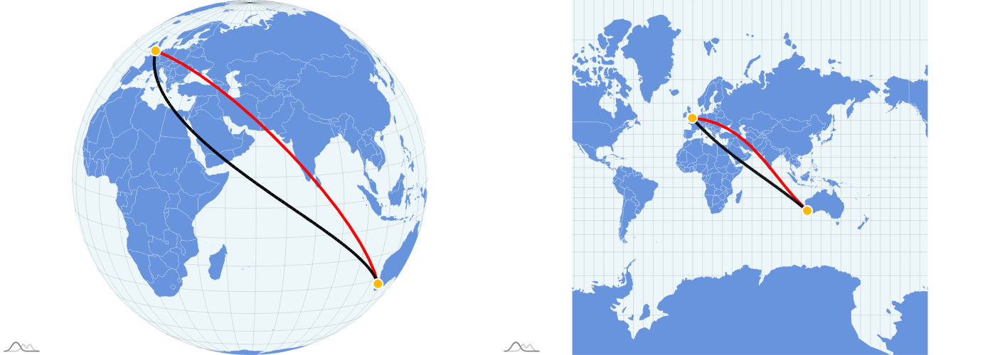

HOW IT WORKS
Great circle routes, rhumb lines and flight paths
Why can the shortest route look curved on a map? Use Great Circle Visualizer to explore routes between airports, compare map projections and see how selected historical flight tracks differ from a geometric shortest path.
How to plot a route between airports
- Open the app. The first panel is “Map Projections & Great Circle Visualization”. Suggested airport pairs are available to explore straight away.
- Choose Airport A and Airport B. Start typing an airport name or city and select the matching result. Optionally narrow each search using its country dropdown.
- Click “Add”, then “Update Flight Paths”. The pair appears in the airport pair tags and its great circle is drawn on the map.
- Expand a pair tag. Read the airport coordinates, great circle distance and rhumb line distance in kilometres. The selected route is highlighted in red.
- Change the view. Use the projection dropdown or Map/Globe switch. Drag the globe to view the route from another angle; changing the projection changes its appearance, not the endpoints.
To compare the two route types side by side, open “Compare Great Circles and Rhumb Lines”. Choose an airport pair from that panel’s list, select a projection and use the Rhumb Line switch to show or hide the black line. That comparison list is separate from the custom pairs you add to the main map.
Great circle vs rhumb line: shortest route or constant bearing?
A great circle is a circle whose centre is the centre of a sphere. The shorter great-circle arc between two non-antipodal points gives the shortest surface route on that sphere. A great circle route usually changes its bearing along the way. [1]
A rhumb line, also called a loxodrome, crosses meridians at a constant angle: its bearing relative to true north stays constant. It is generally longer than the great circle route, although the two coincide along a meridian or along the equator when following the same shorter arc. [1]
The app’s comparison panel draws the great circle in red and the rhumb line in black. “Straight on the screen” is not the same as “shortest on Earth”: the projection matters.
A worked example: Perth to London Heathrow
In the main map, find the suggested PER–LHR tag and expand it. If you removed it, use “Suggestions” to restore suggested pairs. The route connects Perth International Airport in Australia with London Heathrow in the United Kingdom.
| Route measure | Distance |
|---|---|
| Great circle | 14,508.3 km |
| Rhumb line | 14,767.8 km |
| Rhumb line compared with great circle | +1.79% |
The rhumb line is about 259 km longer. These are geometric airport-to-airport distances, not measurements of a particular flight. The percentage uses the unrounded distances: (rhumb line − great circle) ÷ great circle × 100.
Now open the comparison panel, choose PER–LHR and select Mercator. Compare the red and black paths on the globe at left and the flat map at right.

In the expanded main-map tag, this pair also has historical flight overlays. The bundled Perth → London dataset summarises six tracks and London → Perth five tracks, covering 13–18 February 2026. That date range describes this example dataset—not today’s flight activity.
Why flight paths look different on Mercator and a globe
Mercator displays constant-bearing rhumb lines as straight lines in its normal aspect. Most great circle routes appear curved. Its scale distortion increases towards the poles, so judging a route’s distance from its drawn length can be misleading. [2]
The app’s orthographic globe view shows one hemisphere at a time. Rotate it to bring your route into view and compare it with the flat map. A great circle can appear straight when viewed edge-on, but it need not appear straight from every viewing angle.
Try switching to Equal Earth and other projections. You are viewing the same route through different transformations. Use the app’s numerical distances rather than measuring pixels or assuming every projection preserves distances.
Great circle routes are not necessarily actual flight paths
The red great circle is a geometric reference, not a prediction of an aircraft’s route. A flight may deviate because of winds, weather, airspace restrictions, air traffic routing or departure and arrival procedures. The shortest surface distance is not automatically the quickest or most practical journey.
Selected suggested pairs have gold aircraft icons and historical flight-route data. Expand one to display available directions: blue dashed for Airport A → B and green dashed for B → A. A grey aircraft icon does not indicate an available overlay; missing data does not by itself establish whether an airline operates the route.
These overlays are median polylines derived from sampled ADS-B tracks, not live aircraft positions and not necessarily a path flown by any single aircraft. The expanded card lists source flight counts, callsigns, dates and OpenSky Network attribution. OpenSky supplies aircraft tracking observations rather than a commercial timetable. [3]
Questions and limitations
Can I use this as a flight distance calculator?
Yes, for exploring approximate great circle and rhumb line distances between airports. It does not calculate an airline’s flown mileage, ticket price, flight time or operational flight plan. The spherical model is an approximation to Earth’s ellipsoidal shape, and other calculators may use different coordinates or Earth models. [1]
Why does a route cross the edge of the map?
A flat world map has a seam, often near the antimeridian. A route crossing that seam can appear split. Switch projection or rotate the globe to understand its continuous path on the sphere.
Does a suggested route mean there is a scheduled flight?
No. Suggested pairs are examples for exploring geometry. A route’s presence, or the absence of flight-track data, is not a current service announcement. Check directly with airlines for schedules.
Can I compare any custom pair in the side-by-side panel?
The main map supports custom airport pairs. The side-by-side comparison currently uses its own predefined list; adding a pair to the main map does not automatically add it there.
Is this suitable for navigation?
No. This is an educational visualizer, not certified navigation, dispatch or flight-planning software. It does not account for terrain, current weather, airspace availability, aircraft performance or navigation-chart requirements.
Sources and further reading
- Chris Veness, Movable Type Scripts: spherical distance, bearings and rhumb lines.
- Esri: Mercator projection properties and distortion.
- OpenSky Network API documentation. Data attribution: Matthias Schäfer, Martin Strohmeier, Vincent Lenders, Ivan Martinovic and Matthias Wilhelm, “Bringing Up OpenSky: A Large-scale ADS-B Sensor Network for Research”, IPSN, pp. 83–94, April 2014.
App-specific methods and limitations: flight corridor processing documentation. Example values and illustration were checked against the application’s bundled PER–LHR data.